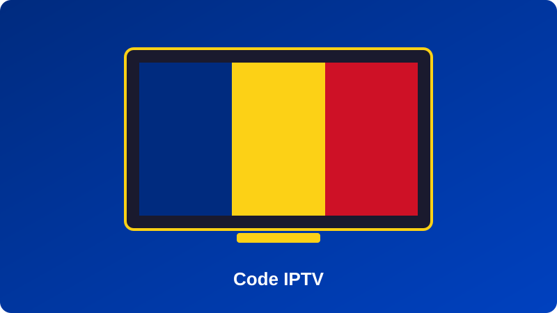

Daca ai primit sau vrei sa primesti un code iptv, probabil te intrebi ce inseamna exact si unde se introduce. Cuvantul apare peste tot: in mesaje de la furnizori, in aplicatii, pe forumuri. Totusi, putini explica simplu ce face acest cod si cum il folosesti ca sa vezi canalele romanesti pe televizor.
Pe scurt, code iptv este cheia ta personala de acces. Il introduci o singura data in aplicatie, iar serverul iti trimite lista de canale, ghidul de programe si, uneori, filmele la cerere. Fara el, aplicatia nu stie ce abonament sa incarce, iar ecranul ramane gol. De aceea, merita sa intelegi cum functioneaza, ca sa eviti erorile obisnuite si pierderea timpului seara, in fata televizorului.
In acest ghid explicam ce este code iptv, cum il activezi pas cu pas, pe ce aparate merge si ce faci daca apar probleme. Echipa Romania IPTV lucreaza zilnic cu familii din Romania si din diaspora, deci recomandarile vin din situatii reale. Daca esti la inceput, citeste si ghidul despre iptv romania, apoi revino aici pentru partea practica.

Cuprins
- Ce este un code iptv si la ce foloseste
- Cum functioneaza un code iptv pas cu pas
- Cum introduci code iptv in aplicatie
- Pe ce aparate poti folosi un code iptv
- Code iptv gratuit: ce poti face si ce nu
- Probleme frecvente cu code iptv si solutii
- Code iptv pentru romanii din diaspora
- Cum primesti un code iptv de la Romania IPTV
- Intrebari frecvente
- Concluzie
Ce este un code iptv si la ce foloseste
Un code iptv este un sir scurt de litere si cifre care identifica abonamentul tau si il leaga de aplicatia instalata pe televizor, telefon sau box. Cu alte cuvinte, este cheia care deschide lista de canale. Fara el, aplicatia ramane goala; cu el, apar canalele, ghidul de programe si filmele la cerere.
Termenul se foloseste pentru mai multe lucruri diferite, de aceea apar confuzii. Unii spun code iptv cand se refera la un cod de activare, altii cand vorbesc despre o adresa M3U sau despre datele Xtream. Mai jos le separam clar, ca sa stii exact ce primesti si unde il introduci.
Cod de activare, cod de acces si date de conectare
Codul de activare se introduce o singura data in aplicatie si ramane salvat. Codul de acces este cel pe care il ceri cand testezi serviciul. Datele de conectare cuprind, de obicei, un nume de utilizator, o parola si adresa serverului. Toate trei fac acelasi lucru: spun aplicatiei ce abonament sa incarce.
De ce nu exista un cod universal
Fiecare serviciu isi genereaza propriile coduri, pentru fiecare client in parte. Prin urmare, un code iptv gasit pe un forum nu va merge decat, eventual, cateva ore si apartine altcuiva. Un cod personal, primit de la furnizor, este singura varianta stabila.
Cum functioneaza un code iptv pas cu pas
Dupa ce primesti code iptv, aplicatia il trimite catre server, serverul verifica abonamentul si trimite inapoi lista de canale. Procesul dureaza cateva secunde, iar la urmatoarea pornire nu trebuie sa il mai introduci.
Ce se intampla in spate
Serverul compara codul cu baza de date a abonatilor, verifica data de expirare si numarul de conexiuni permise. Daca totul este in regula, primesti lista de canale, iar ghidul de programe (EPG) se incarca automat.
Cate dispozitive poate folosi un cod
De regula, un abonament permite una sau mai multe conexiuni simultane. Daca doua televizoare folosesc acelasi code iptv in acelasi timp, verifica daca abonamentul tau include doua conexiuni, altfel unul dintre ele se va opri.
Cat de sigur este sa pastrezi codul
Trateaza datele de acces ca pe o parola. Nu le trimite in grupuri publice si nu le posta in comentarii, pentru ca oricine le vede poate folosi abonamentul tau si poate ocupa conexiunile pe care le-ai platit. Daca banuiesti ca ai trimis datele unei persoane gresite, cere imediat echipei de suport sa le schimbe.
| Tip de acces | Unde il introduci | Cand este potrivit |
|---|---|---|
| Cod de activare | Aplicatie cu portal propriu | Utilizatori incepatori |
| Date Xtream | Player compatibil Xtream | Cei care vor ghid complet |
| Link M3U | Orice player M3U | Aparate mai vechi |
Cum introduci code iptv in aplicatie
Pasii difera putin de la o aplicatie la alta, dar logica este aceeasi. Ai nevoie de aplicatie, de conexiune la internet si de code iptv primit de la furnizor.
- Instaleaza aplicatia compatibila din magazinul aparatului.
- Deschide sectiunea de adaugare a unei liste sau a unui cont.
- Alege tipul de acces: cod, Xtream sau M3U.
- Scrie datele exact cum le-ai primit, fara spatii in plus.
- Salveaza si asteapta incarcarea canalelor.
Sfaturi pentru a evita erorile de scriere
Cea mai frecventa problema este o litera confundata cu o cifra, de exemplu O si 0 sau l si 1. Copiaza codul din mesaj si lipeste-l direct in aplicatie, in loc sa il tastezi cu telecomanda. Pe televizor poti folosi tastatura telefonului prin aplicatia de control.
Ce faci daca nu se incarca nicio lista
Verifica mai intai internetul, apoi data si ora aparatului, pentru ca o ora gresita poate bloca autentificarea. Daca problema continua, scrie echipei de suport si trimite o captura de ecran cu eroarea.
Pe ce aparate poti folosi un code iptv
Un code iptv functioneaza pe aproape orice aparat modern conectat la internet, atata timp cat exista o aplicatie compatibila. Ghidul nostru despre cel mai bun iptv romania explica pe larg cum alegi serviciul potrivit pentru casa ta.
Smart TV si Android TV Box
Smart TV-urile Samsung, LG si Android TV pot rula direct aplicatia. Un Android TV Box conectat prin cablu ramane una dintre cele mai stabile variante, mai ales pentru seara, cand reteaua este incarcata.
Fire TV Stick, Apple TV, telefon si computer
Fire TV Stick este ieftin si usor de instalat, iar Apple TV ofera o interfata curata. Pe telefon si pe computer poti introduce acelasi code iptv, deci poti urmari canalele oriunde te afli, in tren sau in vacanta.
Aparate mai vechi si compatibilitate
Daca televizorul are cativa ani, este posibil sa nu gaseasca aplicatia in magazin. In acest caz, un box Android mic rezolva problema: il conectezi prin HDMI si ai acces la toate aplicatiile moderne, fara sa schimbi televizorul. Intreaba echipa de suport inainte sa cumperi ceva, ca sa alegi un model care merge bine.
Cerinte minime de internet
Pentru imagine HD ai nevoie de aproximativ 10 Mbps, iar pentru 4K de aproximativ 25 Mbps. Wi-Fi-ul merge pentru un singur aparat apropiat de router, dar cablul Ethernet ramane alegerea sigura.
Code iptv gratuit: ce poti face si ce nu
Multi cauta un code iptv gratuit si dau peste liste postate pe forumuri sau pe retele sociale. Sa fim sinceri: aceste coduri sunt instabile si, de multe ori, nu mai functioneaza dupa cateva ore. Unele sunt chiar capcane menite sa iti ceara date personale.
De ce conteaza sursa
Cand primesti accesul direct de la furnizor, stii cine raspunde daca apare o problema. Poti cere ajutor, poti reinnoi abonamentul fara griji si ai o persoana de contact reala. Cand copiezi date de pe un forum, nu ai nimic din toate acestea, iar timpul pierdut cautand alte liste depaseste de obicei pretul unui abonament lunar.
Varianta sigura: testul gratuit oficial
Cea mai buna cale de a incerca un serviciu fara risc este testul oferit de furnizor. Scrii un mesaj, primesti un code iptv de test si il folosesti cateva zile. Astfel vezi calitatea imaginii in orele de varf, inainte sa platesti ceva. Pe pagina despre cel mai bun iptv gasesti criteriile dupa care sa judeci rezultatul.
Riscurile listelor anonime
O lista fara proprietar nu are suport, nu are garantie si se poate opri oricand. In plus, nu stii cine administreaza serverul. Pentru vizionare zilnica, un abonament cu suport este mult mai potrivit.
Probleme frecvente cu code iptv si solutii
Chiar si cu un code iptv corect, pot aparea mici probleme. Majoritatea se rezolva in cateva minute, fara ajutor tehnic.
Codul este respins sau marcat ca invalid
Verifica daca ai copiat tot sirul, fara spatii la inceput sau la sfarsit. Daca abonamentul a expirat, serverul respinge codul, deci intreaba daca reinnoirea a fost inregistrata.
Canalele se incarca, dar imaginea se blocheaza
Cauza obisnuita este reteaua, nu codul. Treci pe cablu, reporneste routerul si inchide alte aplicatii care consuma banda, cum ar fi descarcarile sau jocurile online.
Ghidul de programe lipseste
EPG-ul se incarca dupa cateva minute de la prima conectare. Daca ramane gol, reincarca lista din setari sau cere echipei sa verifice sursa ghidului.
Aplicatia se inchide singura
Pe aparatele cu memorie putina, aplicatia poate fi oprita de sistem. Inchide celelalte programe, goleste memoria cache din setari si reporneste aparatul. Daca ai un box vechi, actualizeaza aplicatia la ultima versiune disponibila.
Mesaj despre numarul maxim de conexiuni
Inseamna ca acelasi code iptv este folosit pe mai multe aparate decat permite abonamentul. Inchide aplicatia pe celelalte dispozitive sau cere o conexiune suplimentara.
Code iptv pentru romanii din diaspora
Pentru un roman plecat in Germania, Italia, Spania, Marea Britanie sau Belgia, code iptv este poarta spre jurnalul de seara, seriale si emisiunile de weekend. Citeste si lista de canale romanesti iptv ca sa vezi ce posturi iti trebuie.
Functioneaza codul in orice tara
Da, atata timp cat ai internet stabil. Nu depinde de antena sau de operatorul local, ci doar de conexiunea ta. Prin urmare, acelasi cod merge acasa, in vacanta sau la rude.
Canalele romanesti pe care le cauti
Stiri, filme, sport, muzica si desene animate pentru copii sunt cele mai cerute categorii. Verifica la test ca posturile tale preferate sunt in lista si ca ruleaza in HD.
Sfaturi pentru seara de weekend
Weekendul aduce cea mai mare aglomeratie pe retea, deoarece mai multe familii se uita simultan la filme si emisiuni. Pregateste lista de favorite dinainte, verifica internetul si pastreaza la indemana numarul de suport. Asa nu pierzi inceputul emisiunii preferate din cauza unei setari uitate.
Comparatie cu alte comunitati
Modelul cu cod de acces este folosit si de alte comunitati din diaspora. Poti vedea cum functioneaza la greek iptv sau la tilaa iptv, apoi sa compari cu ce primesti aici.
Cum primesti un code iptv de la Romania IPTV
La Romania IPTV, procesul este simplu si nu necesita cunostinte tehnice. Scopul este sa ai canalele pe ecran in cateva minute, nu sa petreci seara citind instructiuni.
Cere testul pe WhatsApp
Scrii un mesaj echipei, spui ce aparat folosesti si primesti code iptv de test, plus linkul aplicatiei potrivite. Nu cerem card si nu exista contract.
Instalare ghidata
Daca ai nevoie, echipa te ghideaza pas cu pas: instalarea aplicatiei, introducerea codului si crearea listei de favorite. De obicei, totul dureaza sub zece minute.
Suport in limba romana
Daca code iptv nu merge sau ai intrebari despre reinnoire, scrii in romana si primesti raspuns rapid. Mai multe detalii despre serviciu gasesti in ghidul iptv romania.
Vrei un code iptv de test?
Scrie-ne pe WhatsApp si primesti un test gratuit cu Romania IPTV: fara card, fara contract, cu suport in limba romana.
Cere test gratuit pe WhatsAppIntrebari frecvente
Ce este un code iptv?
Este un cod de activare sau de acces care leaga abonamentul tau de aplicatia instalata pe televizor, telefon sau box si incarca lista de canale.
Unde introduc code iptv?
In sectiunea de adaugare a contului sau a listei din aplicatia IPTV. Alegi tipul de acces, scrii codul exact cum l-ai primit si salvezi.
Exista un code iptv gratuit care functioneaza?
Codurile gratuite din liste publice sunt instabile si se opresc repede. Varianta sigura este testul gratuit oferit de un furnizor, pe WhatsApp.
Pot folosi acelasi code iptv pe mai multe aparate?
Depinde de abonament. Numarul de conexiuni simultane este stabilit la comanda, iar pentru mai multe ecrane poti cere conexiuni suplimentare.
De ce spune aplicatia ca code iptv este invalid?
Cauzele comune sunt o greseala de scriere, spatii in plus, un abonament expirat sau o ora gresita pe aparat. Verifica-le pe rand sau cere ajutor suportului.
Merge code iptv in afara Romaniei?
Da. Serviciul depinde doar de conexiunea la internet, deci functioneaza in orice tara, inclusiv pentru romanii din diaspora.
Cat dureaza activarea unui code iptv?
De obicei cateva minute. Dupa ce introduci codul, lista de canale se incarca in cateva secunde, iar ghidul de programe in cateva minute.
Cum primesc un code iptv de test?
Scrie-ne pe WhatsApp, spune-ne ce aparat folosesti si primesti un cod de test fara card si fara contract.
Concluzie
Un code iptv nu este complicat: este cheia personala care deschide lista ta de canale. Foloseste doar coduri primite de la un furnizor, copiaza-le fara greseli, testeaza seara si pastreaza datele de acces la indemana. Astfel ai televiziunea romaneasca acasa, oriunde in lume.
Pentru mai multe informatii, citeste ghidul iptv romania, apoi scrie-ne pe WhatsApp si porneste-ti canalele preferate cu Romania IPTV.
Citeste in continuare: cel mai bun iptv, cel mai bun iptv romania si canale romanesti iptv.